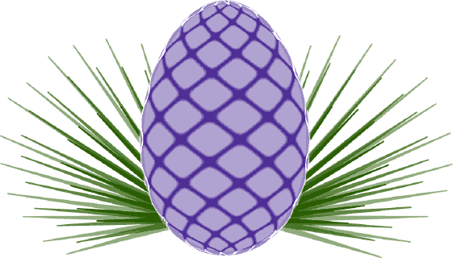
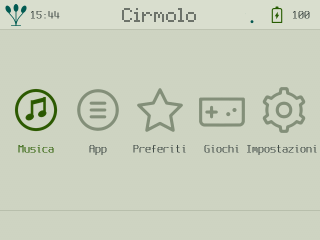
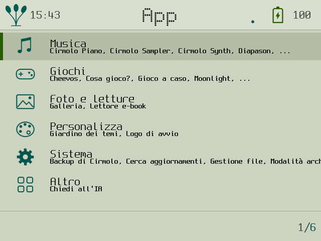
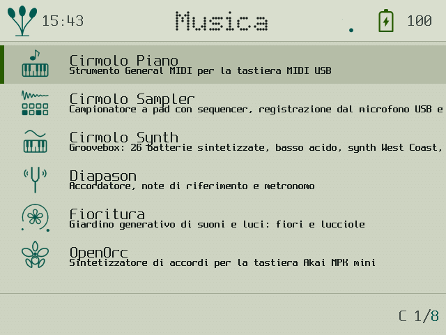
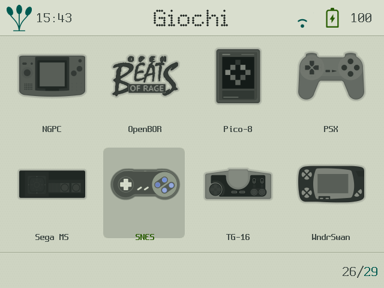
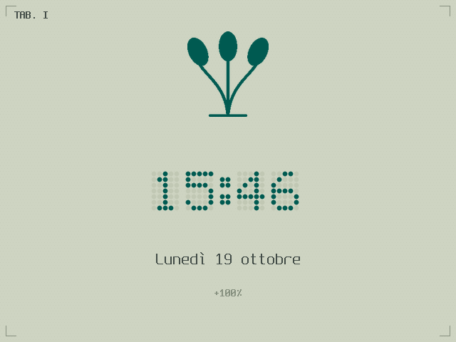
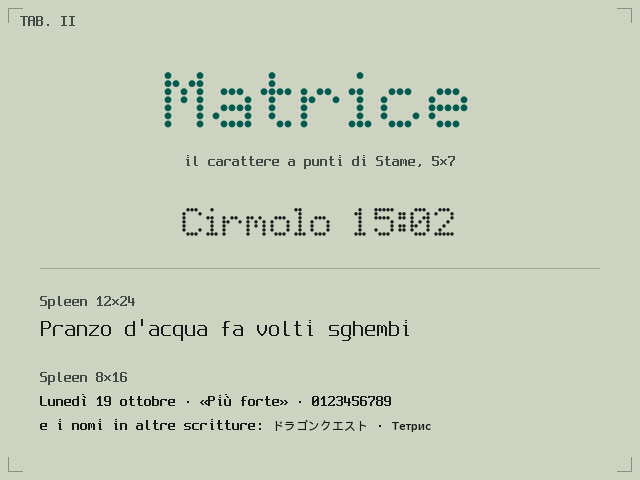
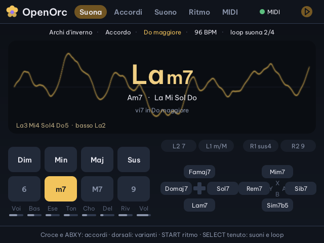

Cirmolo
Pinus cembra L.
AI & Music OS
for handhelds
La Miyoo Flip, in italiano, con la musica e l'intelligenza artificiale dentro.
Cirmolo è un fork di spruceOS pensato per la Miyoo Flip. Interfaccia tutta in italiano, sintetizzatori e campionatori da suonare con una tastiera MIDI USB, un'IA che traduce i giochi e consiglia cosa giocare. Il nome viene dal cirmolo, il pino cembro delle Dolomiti, parente dell'abete rosso: spruce.
In sviluppo, provato solo sulla Miyoo Flip. Lo usi a tuo rischio, come spruceOS. English: see the README.

Sulla console
Il tema STAME
Dalla versione 0.4 la console si veste come Stame, lo strumento ad accordi nato sulla Flip: il suo tema Giorno, un LCD riflettente. Vetro grigio-verde con la maglia di punti, inchiostri scuri e ogni colore con un ruolo; Matrice, il carattere a punti di Stame, nella testata e nell'orologio del salvaschermo, con i punti spenti in vista; Spleen, un carattere bitmap, in tutto il resto. Le console sono disegnate a inchiostro e i tasti suonano il «granello di Stame», una nota del suo logo sonoro.
Musica è la prima icona della Home e apre direttamente le app musicali; le altre app sono divise in cartelle: Giochi, Sistema, Altro. Il tema Cirmolo (notte, pigna e aghi) resta in Impostazioni › Tema, insieme a Spruce.





App musicali
Uno studio tascabile
App native scritte in C per la Flip, con un kit comune per grafica, tasti, audio e tastiere MIDI USB.
OpenOrc
Sintetizzatore di accordi ispirato all'Orchid, per la Akai MPK mini IV o i tasti della Flip. Sette motori (anche un coro di voci), 28 suoni in stereo con shimmer, nastro e pompa, i tuoi suoni salvati, looper a strati.
Leggi il manuale illustratoFioritura
Un giardino di suoni e luci: pianti una nota, fiorisce e torna a ogni respiro sempre più piano; se lo lasci stare, sogna da solo. Lucciole che rimbalzano in una griglia, sei atmosfere, Launchpad con i LED a colori. Con un microfono ti ascolta: canti e fiorisce, soffi e passa una brezza, batti le mani e passa una lucciola.
Scoprila e provala nel browserCirmolo Synth
Groovebox tutta sintetizzata: 12 batterie da 26 kit, un basso acido alla 303 e Piega, un synth West Coast. Sequencer fino a 64 passi con probabilità e condizioni, 33 ritmi pronti, pagina Live, filtro DJ e stutter, clock MIDI.
Scopri Cirmolo SynthCirmolo Sampler
Campionatore a 16 pad con sequencer, registrazione dal microfono USB, libreria dei campioni, esportazione in WAV e Launchpad.
Scopri Cirmolo SamplerCirmolo Piano
Strumento General MIDI con il SoundFont GeneralUser GS: 287 preset da suonare con la tastiera MIDI.
Scopri Cirmolo PianoDiapason
Accordatore per chitarra, basso, ukulele e violino, note di riferimento e metronomo.
Scopri DiapasonIl progetto gemello
Stame
Uno strumento ad accordi aperto, nato sulla Flip: tieni premuto un tipo di accordo, premi un tasto e ne esce l'accordo intero, con il basso. Si suona con la Akai MPK mini IV e un macro pad, ha duecento suoni, un looper e una batteria che si inventa da sola. È un progetto a parte: in Cirmolo si installa da Musica › Installa Stame, con il Wi-Fi. Il tema STAME della console viene dalla sua plancia.
Intelligenza artificiale
Un'IA che conosce la tua collezione
Servono il Wi-Fi e le tue chiavi API, che restano solo sulla scheda SD. Alcuni fornitori hanno modelli gratuiti.
Chiedi all'IA
Chat con Claude e molti altri fornitori, anche a voce: tieni premuto R2 e parla, la risposta si può ascoltare.
Scopri Chiedi all'IATraduttore dei giochi
Nei giochi di RetroArch, SELECT + giù mette in pausa e mostra la traduzione del testo sullo schermo.
Come funzionaScheda del gioco
Dal menu di un gioco: in breve, di cosa parla, come si gioca, consigli e curiosità.
Come funzionaDiario delle partite
A fine partita annota gioco, durata e dove eri rimasto; te lo ricorda quando lo riapri.
Come funzionaTastiere configurate dall'IA
Colleghi una tastiera MIDI qualsiasi a OpenOrc, muovi i controlli e l'IA gratuita sceglie dove metterli.
Nel manuale di OpenOrcManuali
Da leggere, o da tenere aperti mentre suoni

Manuale illustrato
OpenOrc, un tasto un accordo
Le schermate vere della console, la Flip disegnata con i comandi da provare, le sei esecuzioni, i motori, lo stereo, i 28 suoni di fabbrica e le tastiere configurate dall'IA.
- Prontuario di OpenOrctutti i comandi in una pagina
- Fioriturail giardino, le lucciole, il Launchpad, il microfono
- Cirmolo Synthritmo, suoni, mixer, live, pattern, MIDI
- Cirmolo Samplerpad, sequenza, libreria, microfono, Launchpad
- Cirmolo Pianostrumenti General MIDI e tastiera MIDI
- Diapasonaccordatore e metronomo
- Chiedi all'IAchat, voce, fornitori, azioni
- Cosa gioco?tre domande, quattro consigli
- L'IA nei giochitraduttore, scheda, diario
- Manuale di Stamesul sito di Stame
- Manuale di Fioritura, versione testoanche in inglese
- Manuale di OpenOrc, versione testoanche in inglese
- Manuale di Cirmolo Synth, versione testoanche in inglese
- Scheda della Akai MPK mini IVcome collegarla e configurarla
Installazione
Dalla release alla scheda SD
Fai una copia
Prima di tutto copia i salvataggi della tua scheda SD sul computer.
Scarica
Prendi il pacchetto dell'ultima versione dalla pagina delle release.
Segui le note
Le note di ogni versione spiegano come installarla e cosa cambia.
Cirmolo non contiene e non conterrà mai giochi o BIOS: usa i tuoi.